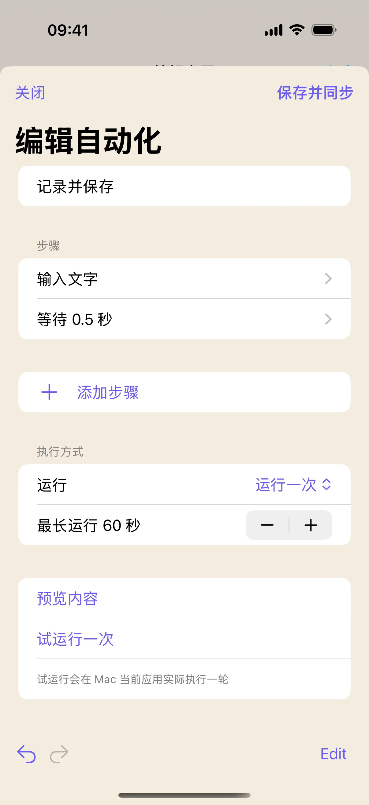
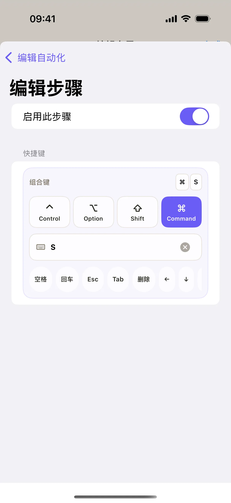
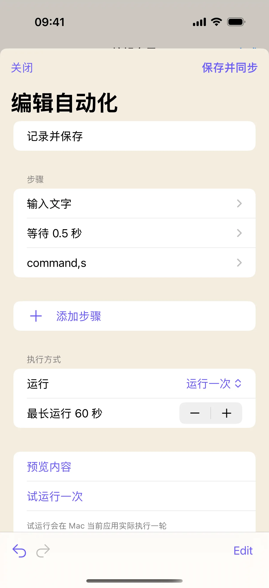

你已经能用一个按钮输入常用文字，接下来可以把后续操作一起配好。本文练习“输入一条记录 → 等待半秒 → 按 ⌘S”，用来熟悉自动化编辑器。先在已经保存过的测试文档中完成一轮，再把步骤换成自己常用的软件操作。
开始前准备
- 先阅读常用文字按钮教程，建立一个“发送文字”按钮。
- Mac 上准备一个已保存到磁盘的测试文档，确认该软件用 ⌘S 保存；把光标放到可编辑正文。
- 连接 Mac 自动化服务；首次练习保留“运行一次”，避免多轮输入难以判断。
1. 从已有文字按钮进入自动化编辑器
将按钮内容设为“今日记录：先确认目标，再补充下一步。”，输入后保留“不追加按键”。关闭文字编辑页，回到操作配置，点“扩展为自动化”。
新打开的“编辑自动化”页会保留原来的文字步骤。在“自动化名称”里输入“记录并保存”。这样能从一个已经明确的动作继续添加步骤，无需重新输入整段文字。
参考：常用文字按钮的完整创建步骤。
2. 添加等待，让步骤之间留出间隔
在“步骤”下方点“添加步骤”，选择“等待”。新增步骤默认等待 0.5 秒，本例直接使用这个值；需要改动时点“等待 0.5 秒”，在步骤编辑页调整。
此时列表应依次为“输入文字”和“等待 0.5 秒”。等待是固定时长，不会检查文档是否加载完成，也不会等待某个弹窗消失。如果目标软件偶尔较慢，先找出等待发生在哪一步，再调整那个间隔。

3. 加入保存快捷键 ⌘S
再次点“添加步骤”，选择“快捷键”，再打开刚加入的快捷键步骤。在组合键区选中“Command”，在主键输入框填 S，完成输入。
返回自动化编辑页，核对第三步显示的键值对应 Command 和 S。组合键是在执行到此步骤时发给电脑当前应用的，因此测试文档要保持在前台；首次另存为对话框会改变后续流程，本文才要求先保存好测试文件。

4. 检查顺序，确认只执行一轮
回到步骤列表，顺序应是文字、等待、快捷键。执行方式选择“运行一次”。如果误加了步骤，可以使用编辑器的编辑模式删除或移动步骤，也可以用底部“撤销”恢复最近修改。
需要暂时跳过某一步时，进入该步骤，关闭“启用此步骤”；确认结果以后再恢复。首次练习保持三个步骤都启用，这样能明确判断输入和保存分别发生在何时。

5. 先预览内容，再在电脑上试运行
点“预览内容”。本例应看到练习文字、等待 0.5 秒和保存快捷键的描述。检查没有多余的 Enter 或空白步骤后，关闭预览。
连接自动化服务时，可以点“试运行一次”。它会保存配置并在 Mac 当前应用实际执行一轮。先把测试文档置于前台，再触发试运行；应插入一条记录，并由目标软件处理 ⌘S。最后检查文档内容和软件的保存状态，必要时关闭再重新打开测试文件确认。

6. 保存到按钮，并按自己的工作流程调整
确认结果后点“保存并同步”，退出组件属性和桌面编辑。下一次使用时，同样先准备好目标文档的输入位置，再点按钮。未连接时可以保存草稿，等连接后重新进入编辑器同步。
要用于其他软件，可以逐步增加“切换应用”或更多快捷键。每新增一步就试运行一轮，比一次加入很多动作更容易定位问题。涉及鼠标位置的流程还会受窗口位置影响；先用明确的文字和快捷键完成稳定的小流程，再扩展。
操作不符合预期时
为什么运行后出现“另存为”窗口？
测试文件还没有完成第一次保存，或目标软件把 ⌘S 用于其他命令。先手动保存文件，确认该软件的快捷键行为，再回到正文重试。
加了等待，为什么仍然把字输到错误位置？
等待只暂停固定时长，不会纠正焦点。检查 Mac 前台应用、文档正文和弹窗；需要切换应用时应明确配置“切换应用”步骤。
预览里有 command,s，为什么文件没保存？
内容预览显示步骤描述，不执行快捷键。需要连接后试运行，并在目标软件中确认保存结果。
如何停止正在重复运行的自动化？
编辑器在运行期间提供“停止自动化”；也可将“停止自动化”配置为一个单独按钮。首次练习保留“运行一次”，无需启用重复模式。
本文按奶猫妙控 1.2.0 的界面与操作编写，更新于 2026 年 9 月 10 日。查看更新日志 · 连接与权限帮助。